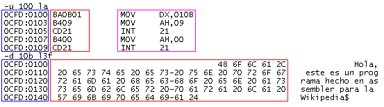
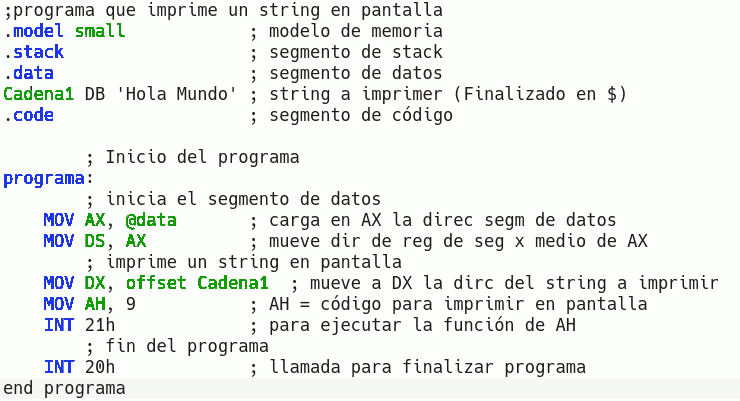
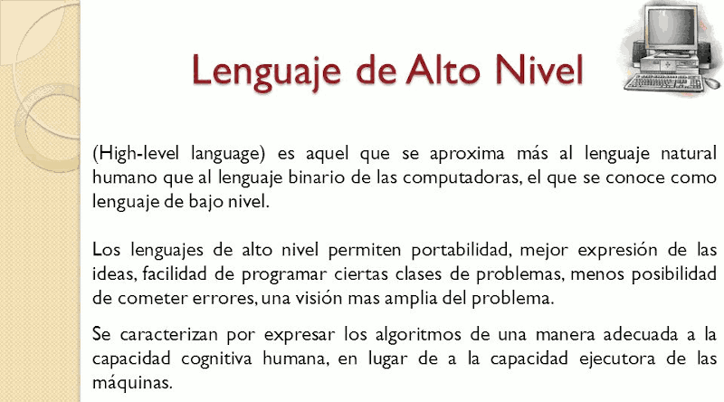
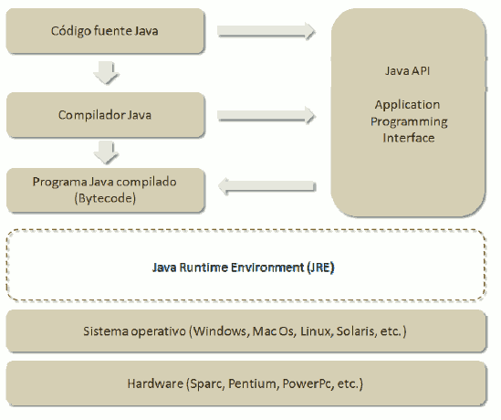

Segons la proximitat del llenguatge a la màquina, els llenguatges poden classificar-se de la manera següent:
Java_Introducción
1.4.1. Nivel del lenguatge
Baix Nivel
Un llenguatge de programació de característiques baix nivell és aquell en el qual les seues instruccions exerceixen un control directe sobre el maquinari i estan condicionats per l'estructura física dels ordinadors/dispositius electrònics que el suporten. Així, el programa d'un processador Intel no funcionaria en un ordenador AMD o MAC. Als llenguatges de baix nivell trobem:
- El llenguatge màquina d'uns i zeros (corrent elèctric de dos voltatges) és l'únic llenguatge realment que comprén l'ordinador. Un codi d'un programa implementat en qualsevol llenguatge se sotmetrà a una sèrie de traduccions encaminades a l'obtenció del codi màquina final.
 - Llenguatge assemblador: es tractaria de la primera aproximació a un llenguatge més pròxim a l'usat per humans, però que també puguen entendre les màquines. S'utilitzen mnemònics per a representar les instruccions que s'executaran en el processador. El procés d'assemblat consisteix a utilitzar una taula per a substituir cada instrucció pel seu corresponent en codi màquina. Així, la instrucció mov AL, 61h (moure al registre AL el valor 61 en hexadecimal) es transformaria en codi màquina a 10110000 01100001 on 1011 representa la instrucció mov; 0000 representa el regitre AL; i 01100001 representa al 61h.

Mig Nivell
Un llenguatge de mig nivell és aquell que posseeix instruccions pròpies dels llenguatges de baix nivell (per exemple pot accedir a registres del processador) i, a més, instruccions pròpies dels llenguatges d'alt nivell. Un exemple de llenguatge de mig nivell és el llenguatge C.

Alt Nivell
Un llenguatge de programació d'alt nivell es caracteritza per expressar els algorismes d'una manera similar al llenguatge humà, en lloc d'estar condicionat per la manera de funcionar les màquines. Per a això es realitza un procés d'abstracció que permet al programador abstraure's de la manera de funcionar les màquines (com emmagatzema la informació, de quina manera, tipus de pantalla, disc, impressora, etc ) permetent a aquest centrar-se centrant-se la lògica del programa.

Java
Java és un llenguatge de programació d'Alt Nivell desenvolupat per Sun Microsystems i presentada en 1995. Es buscava dissenyar un llenguatge que permetera programar una aplicació una sola vegada que després poguera executar-se en diferents màquines i sistemes operatius (Write Once, Run Anyware) gràcies al Java Runtime Environment (JRE), que és gratuït i està disponible per als principals sistemes operatius.

Els programes Java es compilen a un llenguatge intermedi, denominat Bytecode. Aquest codi és interpretat per la màquina virtual de Java del JRE i així s'aconsegueix la portabilitat en diferents plataformes.
Un programa Java compilat en Bytecode es pot executar en sistemes operatius com Windows, Linux, Mac Us, Solaris, BlackBerry US, iOs o Android utilitzant l'entorn d'execució de Java (JRE) apropiat.
La portabilitat de Java ha contribuït al fet que moltes empreses hagen desenvolupat els seus sistemes de comerç electrònic i els seus sistemes d'informació en Internet amb Java. El procés de desenvolupament i de manteniment dels sistemes resulta menys costós i les aplicacions són compatibles amb diferents sistemes operatius.
Java ha evolucionat molt ràpidament. La plataforma de desenvolupament de Java ( Java Development Kit ) JDK, s'ha anat ampliant amb el temps. En realitat Java no sols és un llenguatge de programació, sinó que inclou un llenguatge, una plataforma de desenvolupament (JDK), un entorn d'execució (JRE) i un conjunt de llibreries (Java API - Application Programming Interface) per a desenvolupament de programes sofisticats.

Llicenciat sota la Llicència Creative Commons Reconeixement CompartirIgual 4.0